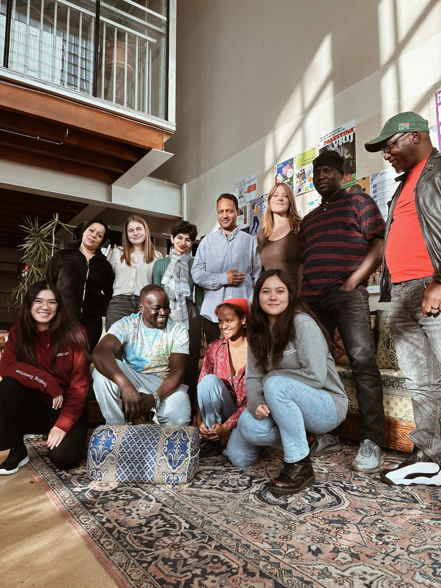

Het ASKV
Het Amsterdams Solidariteits Komitee Vluchtelingen (ASKV) vindt dat ieder mens recht heeft op juridische bijstand en toegang tot onderwijs, gezondheidszorg en onderdak. Oók als je nog geen verblijfsvergunning hebt en niet kunt of durft terug te keren naar je land van herkomst.
Help je mee?
Ik zoek hulpDit doet het ASKV
-
Hulpverlening
Het ASKV biedt juridische en maatschappelijke begeleiding aan mensen zonder verblijfsvergunning.
Lees meer
-
Projectenbureau
Het ASKV signaleert problemen en kansen uit de praktijk en pakt deze projectmatig aan.
Lees meer
-
Medische opvang
Het ASKV biedt medische opvang en begeleiding aan mensen zonder verblijfsvergunning.
Lees meer
-
Lobby en campagne
Het ASKV strijdt met lobby en campagne voor een menswaardig asiel- en migratiebeleid.
Lees meer
Met lobby en campagne strijden wij voor
- Een verblijfsvergunning voor mensen in schrijnende situaties voor wie alle bestaande procedures geen oplossing bieden;
- Landelijke toegang tot mbo en hoger onderwijs voor jongeren zonder verblijfsvergunning;
- Een opvangketen voor mensen zonder verblijfsvergunning met ernstige medische problemen;
- Het versterken van een netwerk van professionals en organisaties om de toegang tot basisrechten voor mensen zonder verblijfsvergunning te beschermen en te verbeteren;
- Betere toegang tot de procedure voor de erkenning van staatloosheid; Een verblijfsvergunning voor erkende staatloze mensen.
Kom in actie
-
Doneer

Steun ons met jouw gift. Zo kunnen we mensen zonder verblijfsvergunning blijven ondersteunen en hun positie structureel verbeteren.
Doneer nu
-
Word vrijwilliger
Zet je in als vrijwilliger. Alleen met de hulp van vrijwilligers kunnen we mensen zonder verblijfsvergunning blijven ondersteunen en hun positie structureel verbeteren.
Word vrijwilliger
-
Blijf op de hoogte

Schrijf je in voor onze nieuwsbrief. Zo blijf je op de hoogte van onze hulpverlening en acties.
Blijf op de hoogte
Het laatste nieuws
-
Kamer zet eerste stap naar veilige zorg voor kwetsbare ongedocumenteerden

Vandaag, 5 november 2024, heeft de Tweede Kamer een motie aangenomen over kliniek Veldzicht. Deze motie roept de regering op om eerst met oplossingen te komen zodat ongedocumenteerden en COA-bewoners met psychische problemen niet op straat belanden. ASKV is blij met de aanname van deze motie en spreekt van een eerste stap in de goede
ASKV
Lees meer
-
Verblijfsvergunning voor Surinaamse oud-Nederlanders
Vanaf 1 januari 2025 tot 1 juli 2025 kunnen Surinaamse oud-Nederlanders een verblijfsvergunning aanvragen bij het loket van het ASKV. Vanaf vandaag kunnen mensen die hier aanspraak op maken bij het ASKV terecht voor ondersteuning bij het proces om de verblijfsvergunning aan te vragen. De voormalige staatssecretaris van Justitie en Veiligheid heeft begin dit jaar
Verblijfsvergunning
Lees meer
-
Stage Juridisch Casemanager

Het team Juridische Hulpverlening is op zoek naar een derde- of vierdejaars hbo-student die stage komt lopen voor minimaal 3 dagen en maximaal 4 dagen per week. De stage start begin februari
Vacature stage
Lees meer
-
Stage Maatschappelijke Hulpverlening Activiteiten
Het team Maatschappelijke Hulpverlening en Activiteiten van het ASKV is op zoek naar een derde- of vierdejaars hbo-student die stage komt lopen voor minimaal drie en maximaal vier dagen per week. De stage start begin februari
Vacature stage
Lees meer
Blijf op de hoogte
Schrijf je in voor onze nieuwsbrief. Zo blijf je op de hoogte van onze hulpverlening en acties.